Course Project · CMU 16-833
Course Project · CMU 16-833
Comparative analysis of visual and lidar SLAM.
There is no single best SLAM algorithm, only ones that fail differently. We set up ORB-SLAM2, RTAB-Map and Google Cartographer in ROS, ran them all against the same benchmark data and the same four driving scenarios we generated in the CARLA simulator, and compared where each one breaks.
Why this is hard
SLAM asks a robot to build a map of its environment and localize itself within that map at the same time. The difficulty is the circularity: to localize itself the robot needs a consistent map, and to acquire that map it needs a good estimate of its own location. That mutual dependency between pose and map is what makes SLAM a search in a high-dimensional space rather than a straightforward estimation problem.
Because the problem is hard, the field has produced many solutions, each with its own advantages and disadvantages. Some work well indoors and poorly outdoors; others the reverse. The aim of this project was to explore lidar and visual SLAM algorithms in ROS and compare them directly, running each against identical datasets so the differences we observed came from the algorithms rather than the data.
A four-person project with Ashwin Nehete, Xikai Dai and Vimalesh Vasu, for 16-833 taught by Prof. Michael Kaess.
The algorithms
ORB-SLAM2
A complete SLAM system for monocular, stereo and RGB-D sensors, focused on building globally consistent maps. It runs three parallel threads: tracking, which localizes the camera by recognizing ORB features in every frame and minimizing reprojection error; local mapping, which optimizes via local bundle adjustment; and loop closing, which detects loops and runs pose-graph optimization to correct accumulated drift.
ORB features are binary, and invariant to rotation and scale within a range, which makes for a very fast recognizer with good viewpoint invariance. The system maintains a covisibility graph linking keyframes that observe common points, and uses DBoW2 to relocalize when tracking fails. It achieves zero-drift localization in areas already mapped, and demonstrates that bundle adjustment outperforms direct methods or ICP where accurate camera localization matters.
RTAB-Map
RTAB-Map with RGB-D uses visual and depth images for feature extraction and matching, for incremental appearance-based loop detection. What distinguishes it is memory management. It splits storage into Long-Term Memory (LTM) and Working Memory (WM), classifying nodes by weight, where weight reflects how often a location is visited. When loop-closure processing time exceeds a threshold, the lowest-weight location is moved into LTM to free up memory, and retrieved back into WM if its neighbors become relevant again.
Loop closure itself uses Bayesian filtering to estimate the probability of a loop, comparing newly scanned nodes against those in WM. Together LTM, WM and Short-Term Memory keep the active node count bounded, which caps memory usage. That is what makes RTAB-Map attractive for large-scale reconstruction and long-term scanning.
Google Cartographer
Cartographer performs real-time SLAM in 2D and 3D across multiple sensor suites, split into two interrelated subsystems. Local SLAM successively builds submaps that are locally consistent but drift over time, inserting each new scan by scan matching. Submaps have to be small enough to minimize drift and large enough for loop closure to work. Global SLAM runs background threads that detect loop-closure constraints by matching scans against existing submaps, then ties the submaps together through pose-graph optimization, with cost functions accounting for global and non-global constraints, IMU data, local SLAM poses and fixed-frame odometry.
Incoming range measurements pass through a band-pass filter, then a fixed-size voxel filter to subsample the point cloud, then an adaptive voxel filter to hit a target point count. An IMU is optional in 2D but required in 3D, where it supplies the initial guess for scan orientation.
Data
Benchmark datasets
Before collecting our own data we ran the algorithms on established benchmarks, to see each one working with the best available data sources and to build control results for comparison. This is how we got a feel for sparsity, loop-closure behavior and robustness per algorithm. We used the TUM RGB-D dataset from the Computer Vision Group at the Technical University of Munich, recorded from a Microsoft Kinect, which supplies RGB-D data along with ground truth.
CARLA driving simulator
For our own data we used CARLA, an open-source urban driving simulator built on Unreal Engine 4. What drew us to it was the flexibility of its sensor suite and its ROS bridge, which translates CARLA sensor data into ROS topics that feed straight into a SLAM system, and translates ROS messages back into commands for the simulated agent. Our simulated car carried a front RGB camera, a front depth camera, an IMU and a lidar.
We generated four scenarios, chosen to stress different failure modes:
- Bag1: a long drive with no loops.
- Bag2: three loops around a block.
- Bag3: a loop around a block in a dynamic environment, with cars and pedestrians.
- Bag4: a quarter circle with constant turning.
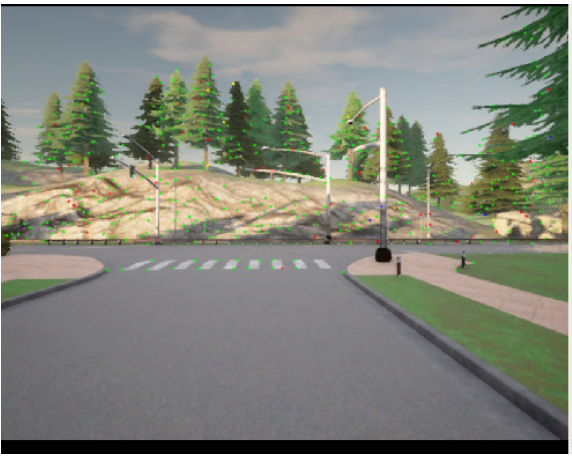
Metrics
A SLAM system outputs an estimated trajectory and an estimated map, but a good trajectory does not guarantee a good map. Evaluating map quality directly is possible in principle and difficult in practice, because accurate ground-truth maps are hard to obtain. So we evaluated the estimated trajectory against ground-truth poses instead, using two measures: absolute pose error (APE), which captures the global consistency of the estimated trajectory by comparing absolute distances against ground truth, and relative pose error (RPE), which measures local accuracy and accounts for drift.
Initial testing
ORB-SLAM2 on TUM sequences
We verified our ORB-SLAM2 setup on TUM sequences chosen to test different situations.
freiburg2_pioneer_360 was recorded from a Kinect on an ActiveMedia Pioneer 3
robot, testing applicability to wheeled robots in a large hall containing office
containers and boxes. freiburg3_long_office_household moves an RGB-D sensor
through a texture-rich and structure-rich office scene, with the end of the trajectory
overlapping the start to force a large loop closure. freiburg3_teddy circles
a teddy bear twice at different heights.
RTAB-Map, and the question it raised
We first ran RTAB-Map's own demo on the TUM freiburg dataset. The Rtabmapviz plugin visualizes both the reconstruction and the camera trajectory, and exporting the mapping results lets the trajectory accuracy be computed. Watching the reconstruction build, it was clear RTAB-Map suits handheld mapping and maps relatively quickly.
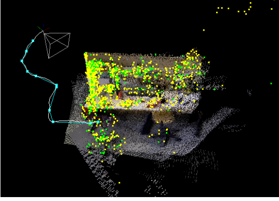
Feeding in our CARLA RGB-D data was a different story. Here RTAB-Map received only RGB-D images, deriving odometry through visual odometry alone, and its reconstruction turned out to be heavily affected by the simulated car's speed. With a fixed camera frame rate, faster driving means larger differences between consecutive frames, which causes RTAB-Map to fail at matching the same feature locations across frames, and eventually to lose tracking.
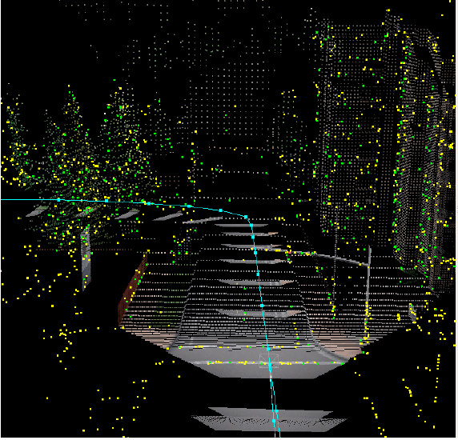
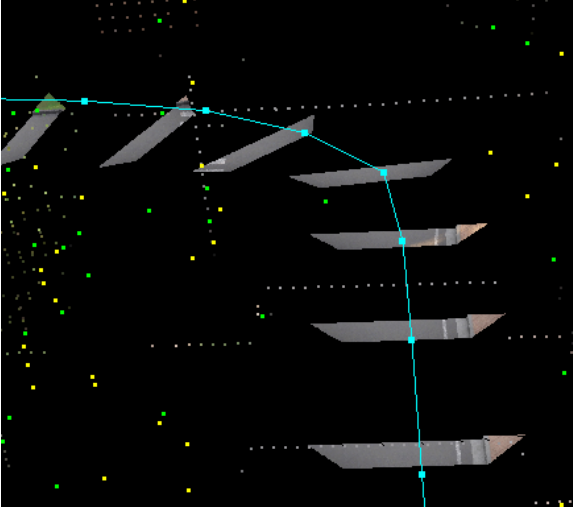
The reconstruction captured the road and almost none of the surroundings. Looking back at the camera view explains why: most of the frame is road surface. Combine that with an open driving environment and comparatively high speed, and there is little for RTAB-Map to latch onto as stable features.
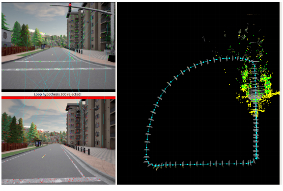
It also failed loop detection on two very similar images, rejecting the hypothesis over a small difference, which shows how sensitive it is to minor image variation. Since the CARLA result fell short of expectations, we ran an extra experiment outside the original project plan to find out what RTAB-Map could really do, using an Intel RealSense L515 camera with IMU and RGB-D input.
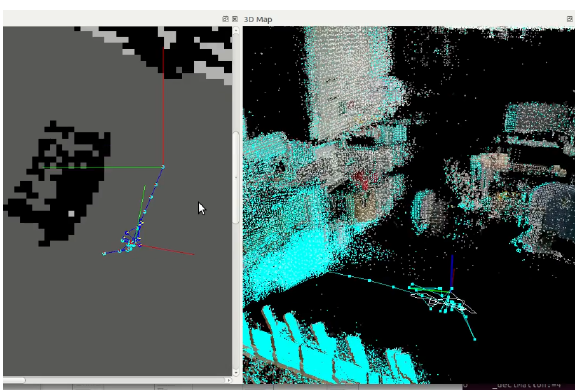
The result was again very different from the demo. RTAB-Map remained highly environment sensitive, responding aggressively to sudden camera movement or slow-moving objects in front of it and losing track. One likely factor is hyperparameter tuning: apart from the parameters needed to subscribe to ROS topics, everything was left at its launch-file default, so there is real headroom here. And despite the mapping trouble, its tracking remained impressive.
Cartographer
We tested Cartographer on the Deutsches Museum demo bags for 2D and 3D SLAM, and on the CARLA data. Setup was relatively straightforward. Cartographer proved comparatively good at detecting loop closure, but shares the family weakness: it is very sensitive to a dynamic environment in front of the scan.
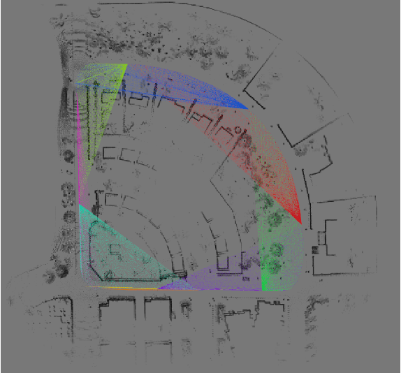
Results on the CARLA scenarios
Below are the estimated trajectories for Bag1, the long drive with no loops, with error mapped onto the trajectory. The differences between the algorithms are visible directly in the shape.
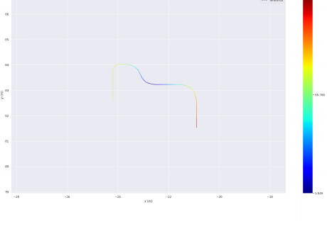
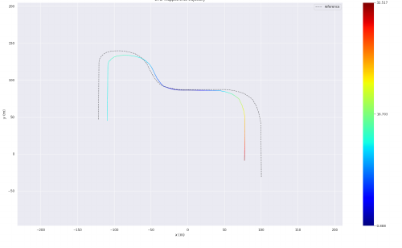
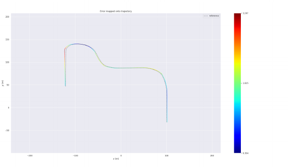
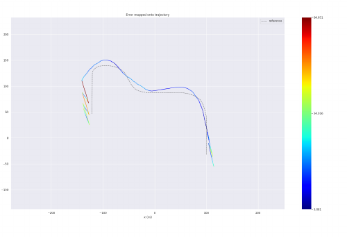
Monocular ORB-SLAM2 had the highest APE of the group, which follows from having no scale and being most prone to drift, so its estimated trajectory comes out scaled down against ground truth. It did produce denser maps than the RGB-D variant, and performed loop closure successfully on Bag2, correcting the map from it. On Bag3 it lost tracking in the dynamic environment once cars and pedestrians were added. Recurring failure modes were tracking loss at high speed and in dynamic scenes, maps built on distant static landmarks, and false relocalization in repetitive environments, which a procedurally generated city has in abundance.
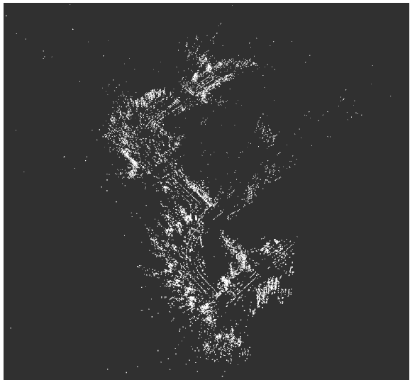
RGB-D ORB-SLAM2 performed similarly to monocular on Bag1 but still produced a scaled trajectory, starting false and drifting over time. On Bag2 it lost track during a sharper turn where monocular did not, likely because fewer feature points were detected in the RGB-D configuration. Bag3 again cost it tracking, this time to heavy traffic during the turn. On Bag4 the trajectory came out mismatched in scale, but it held tracking through both the sharp turns and the constant-radius curve.
RTAB-Map RGB-D recorded the lowest APE values of any system tested, which supports the idea that it performs well on outdoor data. On Bag1 it gave the most accurate trajectory, helped by its use of odometry. Bag2's loop closure was achieved cleanly without losing track through the higher-speed maneuvers. Bag3 cost it tracking in the high-traffic areas, as it did for everything else. On Bag4 it performed extremely well, with the least absolute pose error of the group.
Cartographer landed midway between the others on APE. On Bag1 no loop closure took place at all, which we suspect is why its error exceeded RTAB-Map's on that scenario.
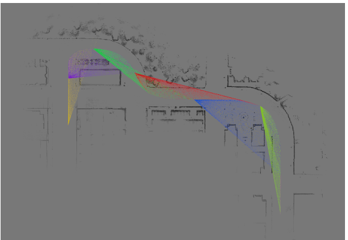
Conclusion
Monocular ORB-SLAM2 provides reliable tracking with relatively low errors, but like the others it is very sensitive to sudden movement and loses tracking when objects move in front of the camera.
RTAB-Map has a very strong visual odometry tracking algorithm. Even though the CARLA results did not match our expectations for 3D map generation, the RealSense L515 test proved the capability is there. With parameter exploration and tuning, it is a powerful way to attack a SLAM problem.
Google Cartographer is relatively good at loop-closure detection, but suffers from a characteristic of laser data: in certain environments reflections and deflections produce inaccurate localization and tracking. It too is sensitive to moving objects in front of the scan and underperforms in highly dynamic environments.
The common thread across all three is worth stating plainly: every system we tested degraded in dynamic environments and under fast motion. The differences were in how they degraded, not whether. Some of these 3D algorithms also support 2D localization and tracking, and with further research can sometimes perform on par with dedicated 2D approaches.
For a team new to SLAM, the value was in setting the systems up across varied sensor suites and porting data through CARLA, which meant directly debugging important components of each pipeline and getting real insight into how they are built internally.
Future work
CARLA can simulate a great deal more than we asked of it. The natural extension is generating datasets under conditions like varying weather, which increases slip and drag, or dynamic lighting. Beyond simulation, the more valuable step is a real mobile robot fitted with lidar and RGB-D cameras, collecting indoor data under changing lighting and outdoor data under real wind and sunlight, so the comparison reflects the conditions the algorithms would actually face.